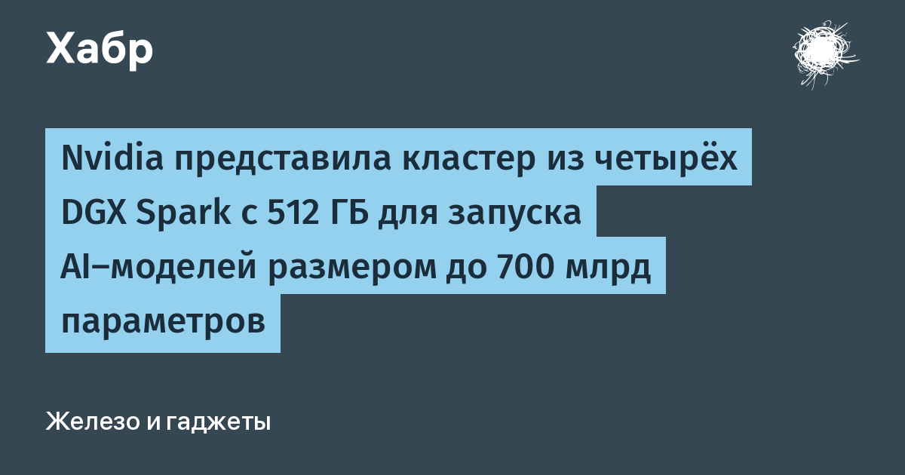

На суперкомпьютерной конференции SC26 в Чикаго NVIDIA объявила о выходе DGX Spark HPC Developer Kit — готового четырёхузлового кластера из своих настольных DGX Spark. Каждый узел построен на суперчипе GB10 Grace Blackwell (20-ядерный Arm + ускоритель Blackwell, до петафлопса в FP4) и несёт 128 ГБ общей памяти LPDDR5X. Вчетвером это даёт 512 ГБ объединённой памяти и 20 ТБ NVMe-хранилища. Узлы связываются кольцом через сетевые карты ConnectX-7: каждый соединён с двумя соседями, так что отдельный коммутатор покупать и настраивать не нужно. Кластер масштабируется от одного узла до четырёх.
Главный аргумент NVIDIA — очередь в общий GPU-кластер. Команда может отлаживать распределённые задачи и гонять ресурсоёмкие расчёты локально, оставив серверное время для production-прогонов, а unpublished-результаты и проприетарные датасеты — на своей территории. В NVFP4-формате кластер тянет модели до 700 млрд параметров локально, например DeepSeek V4.1. Уже готовы демо на четырёх узлах: LAMMPS с Kokkos для моделирования материалов и NAMD для молекулярной динамики; сообщество также проверило GROMACS, OpenFOAM, WRF и микросервисы NIM вроде OpenFold3. Playbook для HPC SDK с GPU-компиляторами C, C++ и Fortran и MPI обещают «в ближайшее время».
В блоге NVIDIA приводит конкретные кейсы: лаборатория Рубина в Калифорнийском университете в Беркли предсказывает признаки бактерий по геномам с 15-кратным ускорением против 11-часовых очередей кластера, а группа Хартвига там же дообучает Nemotron 3 Super 120B методом LoRA прямо на одном устройстве в NVFP4, запуская 8–24-часовые тренировки подряд. Kvantify считает тензорные сети для квантовой химии до 70 кубитов на одном Spark.
Комплект уже показывают на SC26 и он доступен для заказа через OEM-партнёров (Acer, ASUS, Dell, GIGABYTE, HP, Lenovo, MSI и другие), но цену NVIDIA не называет — на сайте форма заявки. Habr прикидывает: четыре отдельных DGX Spark со 128 ГБ и SSD на 4 ТБ выйдут почти в 28 тысяч долларов без учёта обвязки. Оговоримся: это оценка пересказчика, официальный прайс молчит. Любопытная ирония для обладателей этих самых GB10: «лаборатория на столе» — это, по сути, четыре наших мини-ПК, кольцом и в красивом маркетинге.